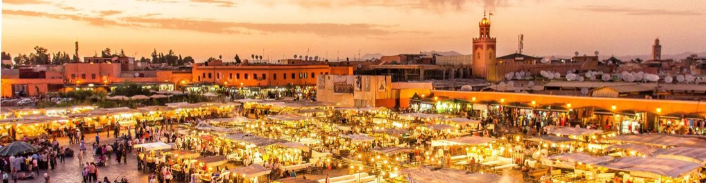

FasGüncel
FasGüncelEndülüs Turu
Fas, Kazablanka, Marakeş, Rabat, Tanca, İspanya, Tarifa, İşbiliyye (Sevilla), Kurtuba, Cordoba, Gırnata (Granada), Malaga
Güncel tarih ve fiyatiçin arayın
İncele →
Şehir etiketine dokunun; programın o günü açılsın.
Aşağıdaki fiyatlar önceki dönem içindir. Güncel fiyat, tarih ve kontenjan için bizi arayın.
| Tek Kişilik Odada Kişi Başı | €1.365 |
|---|---|
| İki Kişilik Odada Kişi Başı | €1.154 |
| 0 - 2 Yaş | €210 |
|---|---|
| 2 - 6 Yaş | €1.100 |
| 6 - 12 Yaş | €1.100 |
* 12 yaş dahil değildir.
* 0 - 6 yaş çocuk fiyatları yataksızdır.
Sabiha Gökçen Havalimanı Dış Hatlar terminalinde buluşarak başlıyor. Air Arabia Havayolları ile saat 00:20’de Kazablanka’ya uçuşunuz başlıyor. Gece yarısından sonra Fas’a ayak basmaya hazırsınız!
Kazablanka’ya varış saat 03:25. Casablanca havalimanına varışımıza istinaden, havalimanında bizleri bekleyen özel otobüsümüz ile Rabat'a doğru yola çıkıyoruz, sabah kahvaltısını erken saatte baskent Rabat’ta aliyoruz, Rabat, sadece Fas’ın başkenti değil, aynı zamanda tarihin izlerini taşıyan bir kültür hazinesi. Şehir turumuzda, Hasan Kulesi, Mechoire de Rabat ve Muhammed V Türbesi gibi ikonik yapılar bizleri bekliyor. Daha sonra, UNESCO Dünya Mirası listesinde yer alan Meknes'e gidiyoruz. Burası, 17. yüzyılda Sultan Mevlayi İsmail tarafından kurulan ve Fas’ın ihtişamlı tarihine ev sahipliği yapan bir şehir. Bab Mansour Kapısı, Mevlayi İsmail Türbesi ve Agdal Gölü gibi görkemli yapılarla tanışacaksınız. Ardindan, Kraliyet Başkentlerinden Fes’e Yolculuk. Fes’e vardığımızda bizi bekleyen otelimizde akşam yemeği ve konaklama.
Sabah kahvaltısının ardından, Fas’ın dini ve kültürel başkenti Fes'i keşfe çıkıyoruz. Şehrin UNESCO Dünya Mirası Listesi'ndeki yerleri arasında, 9. yüzyılda kurulmuş olan Karaouine Üniversitesi ve Al Attarine Medresesi gibi mimari harikalar yer alıyor. Ayrıca, Yahudi Mahallesi, Güney Burcu ve Nejarine Meydanı da tur programımızda. Panoramik bir şehir turunun ardından, Marakeş’e doğru yola çıkıyoruz. Kızıl Şehir olarak da bilinen bu eşsiz şehre varışımızla birlikte otelimize yerleşiyoruz. Akşam yemeği ve konaklama Marakeş’te.
Otelde alacağımız kahvaltının ardından tam günlük Marakeş turumuzda 800 yıllık Koutoubia Minaresi ve Camisi, zeytin ağaçlarıyla çevrili Menara Bahçeleri, Bahia Sarayı, dar sokaklar, Şifa-i Şerif kitabının yazarı Kadı İyaz, Delâilü'l Hayrat kitabının yazarı Süleyman El-Cezûlî ve Kitab-ül İbriz'in yazarı Abdülaziz Debbağ hazretlerinin kabirlerinden açık olanlarını ve Berberi Eczanesi olarak bilinen Argan Yağı ve diğer Fas'a ait bitkisel ürünler alabileceğiniz aktar ziyareti sonrası Afrika'da ki en hareketli şehir meydanı olan Jemaa El Fna Meydanı'na (Kıyamet Meydanı) hareket ediyoruz. UNESCO Milli Miraslar listesinde mevcut ender meydanlardan birisi olan; meddahlar, yılan oynatacıları, dövmeciler, hokkabaz ve cambazların gösterileri ile şenlenen Jemaa El Fna için kısaca "açık hava tiyatrosu" diyebiliriz. Geleneksel dev bir labirenti andıran çarşısında el sanatlarının tüm örneklerini bulmak mümkündür. Bu gezi esnasında kumaşçılar, demirciler, deri tabakhaneleri, ahşap ustaları gibi ülkede mevcut nice el sanatlarının tüm örneklerini bulabilirsiniz. Gezimizin ardından İsteğe bağlı olarak Fas kültürünü yakından tanıyacabileceğimiz akşam yemekli, atlı akrobasi ve folklör gösterili Chez Ali Fantasia Show programına katılma imkani. (ekstra 65 €). Geceleme otelimizde.
Sabahın erken saatlerinde otelimizde alacağımız keyifli kahvaltının ardından Marakeş'in büyüleyici atmosferinden ayrılarak, Atlas Okyanusu'nun kıyısındaki tarihi ve romantik şehir Essaouira'ya bir yolculukla başlıyor. Yol boyunca, Fas'ın muazzam manzaralarının keyfini çıkarabilir, güzergah üzerindeki doğal güzellikleri gözlemleyebilirsiniz. Gezimize Etkileyici manzarası ve taze deniz havası ile bizleri karşılayacak olan liman ile basliyacaz. Burada denizle iç içe olacak, şehre güzel bir giriş yapacaksınız. Tur kapsamında, geleneksel Marakeş atmosferini yansıtan Bab Doukkala, Fotoğraf tutkunları için harika bir nokta olan, Suveyr'in tarihini ve doğal güzelliklerini bir arada eneyimleyecekginiz Surların üzerinde benzersiz bir manzara sunan Tarihi Kasbah Skalası, Balık Pazarı, Mulay Hasan Meydanı, Medina İçindeki Kapalı Çarşı, gorecegimiz yerler arasındadır. Essaouira'nın tarihi ve kültürel zenginliklerini rehber eşliğinde keşfedecek ve şehrin tarihine dair keyifli bilgiler edinme imkanı sağlayacaktır. Essaouira, eski bir Portekiz limanı olarak bilinir ve mimarisi ile farklı kültürlerin izlerini taşır. Hıristiyan, Musevi ve Müslüman etkileşiminin birleşim noktası olan bu şehir, dar sokakları, tarihi yapıları ve etkileyici limanı ile büyüleyici bir atmosfere sahiptir. Atlantik'in serin esintisiyle tanınan Essaouira, aynı zamanda sahilindeki uzun kumsalıyla da ünlüdür. Tur sonrasında öğle yemeği için serbest zamanınız olacak. Essaouira'nın deniz ürünleriyle ünlü restoranlarında lezzetli bir öğle yemeği yiyebilir ve Atlantik'in taze esintisi altında keyifli bir mola verebilirsiniz. Tur sonrası Marakeş’e dönüş. Akşam yemeği ve geceleme Marakeş’teki otelimizde.
Kahvaltının ardından Kazablanka’ya hareket ediyoruz. Varışta, şehir turuna başlayacağız. Turumuzda 1986-1993 yılları arasında yaptırılan Hassan II camii görülecektir. Dünyanın en büyük camilerindendir. 20 000 m² alana kurulu yapı günün en etkileyici gezisi olacaktır (Camii giriş ücreti müşterilerimize aittir.) Anfa & Ain Diab, Muhammed V Meydanı, Birleşmiş Milletler Meydanı. Panoramik tur sonrasında, Kazablanka Havalimanı’na doğru yola çıkıyoruz. Air Arabia ile İstanbul’a dönüş uçuşunuz başlıyor.
Bu rüya gibi turda her anınız unutulmaz olacak. Fas’ın büyüleyici şehirlerini keşfederken hem tarih hem kültürle iç içe olacaksınız. Bir başka unutulmaz tur organizasyonunda tekrar buluşmak dileğiyle!
FasGüncel FasGüncel
FasGüncel
FasGüncel